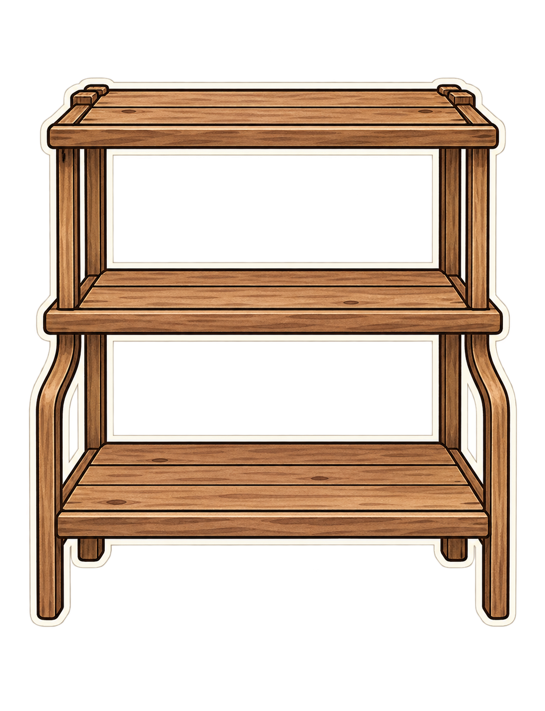
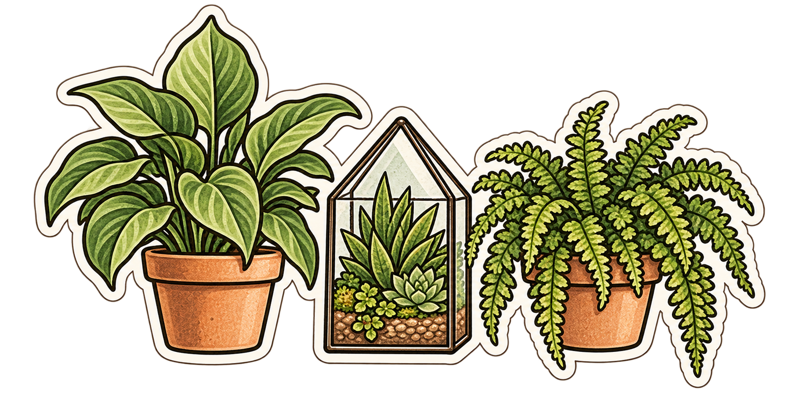
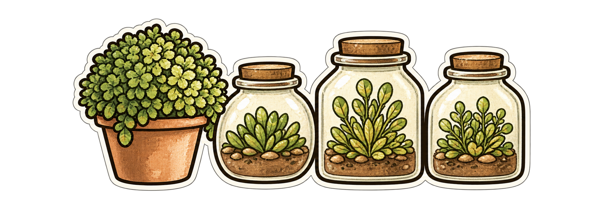
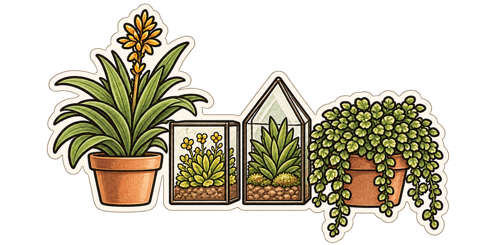

빈 선반과 식물 묶음 3개를 각각 제작했습니다. 체크를 해제하면 묶음별 구성을 확인할 수 있습니다.




조합은 실제 4개 파일을 겹친 배치 예시입니다. 아직 작업실 팔레트에는 등록하지 않았습니다. 파일마다 원본 해상도가 달라 화면 배치 크기를 조정했습니다.
이 단계는 중급 선반 자산 제작입니다. 고급 개별 화분, 난이도 선택·저장 기능은 후속 구현입니다.